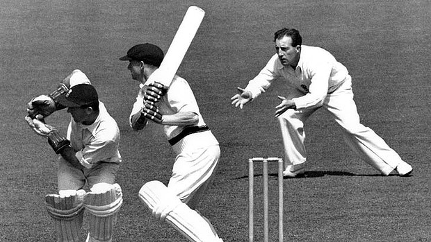

History of Cricket
The game of Cricket has a known history beginning in the late 16th century. Having originated in the South-East England, it became the country’s national sport in the 18th century and has developed globally in the 19th and 20th centuries. International matches have been played since 1844 and Test cricket began, retrospectively recognised in the 1877.Cricket is the World’s second most popular spectator sport after association football
Form of Laws
The International Cricket Council is the Governing Body of the cricket ICC has 105 full members that plays test matches.39 Associates members and 56 Affiliated members the ICC is responsible to organise and govern the major tournament of cricket like world cup cricket. its also appoint the umpire and referees that officiate at all sanctioned Test matches, One Day and T20 international matches. It promulgates the ICC code of conduct , which sets professional standards of discipline for international cricket. The Laws of cricket are set of rules by the Marylebone Cricket Club(MCC) which serve to standardise the format of cricket matches all over the world to ensure uniformity and fairness. There are 42 Laws are in cricket at the moment which outline all aspects of how the cricket is played from how a team wins a game, how a batsman is dismissed(out), through to specification on how the pitch is to be prepared and maintained. The MCC retains copyrights in the laws and only MCC may change the laws, although now a days this would usually only be done after discussion with the game global governing body the ICC.